Investo stock trading app UI design
2022 to 2023
Investo set out to be the first Mongolian app where you could buy a share on the Mongolian Stock Exchange and a share of Tesla from the same screen, with live prices and a 1.5 percent commission. I designed the app that shipped, the update that followed, the component library under both, the landing page, and the deck the founders raised on. Three hundred and fifty-nine screens, all of them dark.1
Trading for the other 88 percent
The founders’ deck opened with a number I kept pinned above the file: only 12 percent of Mongolians say they understand the stock market. The people who do trade are mostly over forty, go through a broker, and move about 70 million tugrik at a time. Investo wanted the person who is 25 to 40, has never called a broker, and has 15 million to put somewhere better than a deposit account.2
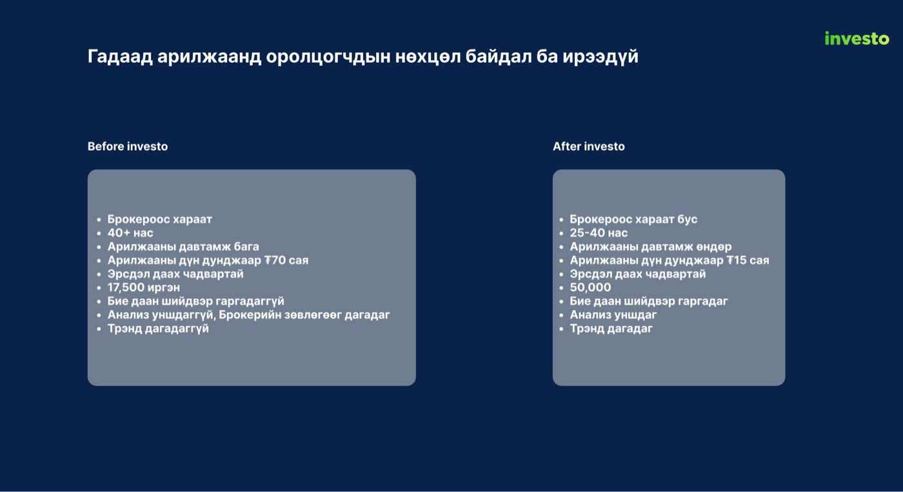
That person needed two things at once. An app that does not look like a bank, because the bank apps had already lost them. And an app that quietly teaches, because most of what they would see on screen, order books, earnings per share, limit orders, they had never met. I made both of those design principles before I drew a screen.
A home screen that leads with the market
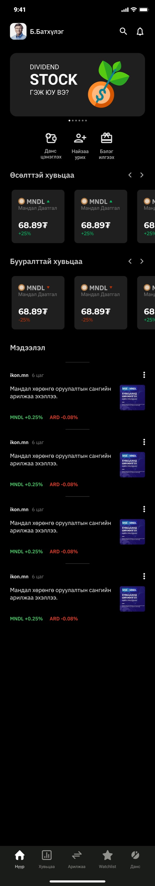
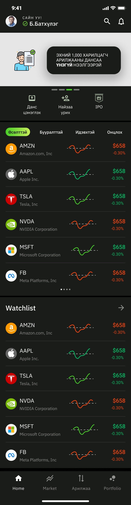
I built the shipped home as an onboarding device as much as a dashboard. The first card explained what a dividend stock is. The cards below it showed the stocks you own and the stocks you watch as tiles, and a news feed ran underneath, because a first-time investor reads before they buy.
By the update I had usage to look at, and the update leads with the list. Foreign tickers, sparklines, price and change, then the watchlist in the same format. I kept one promotional banner at the top and moved the teaching into the places it was needed, which I will come back to. The tab bar went from five items to four, because Watchlist had become a section of Home rather than a destination.
Reading a Mongolian stock in one glance
Every list in Investo is built from one row, and I spent more time on that row than on any screen. Logo, ticker and company name, a sparkline of the day, the price and the change. Green up, red down, grey flat, and never any other colour in the list, so the eye can scan for colour before it reads a number.
The row, rebuilt here from the file’s tokens with the prices that were in my wireframes. The three filters are how the exchange itself sorts its companies.3
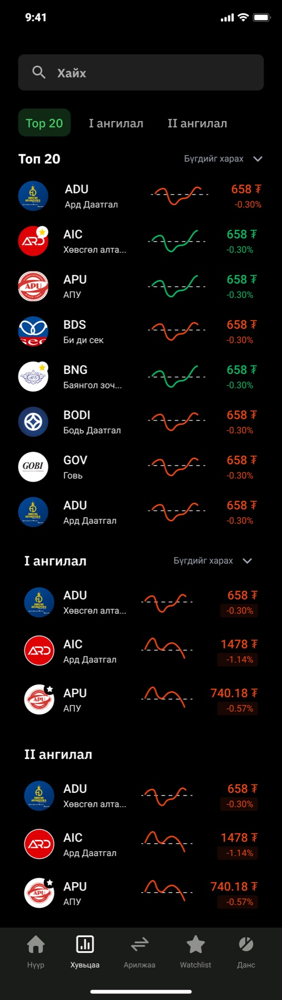
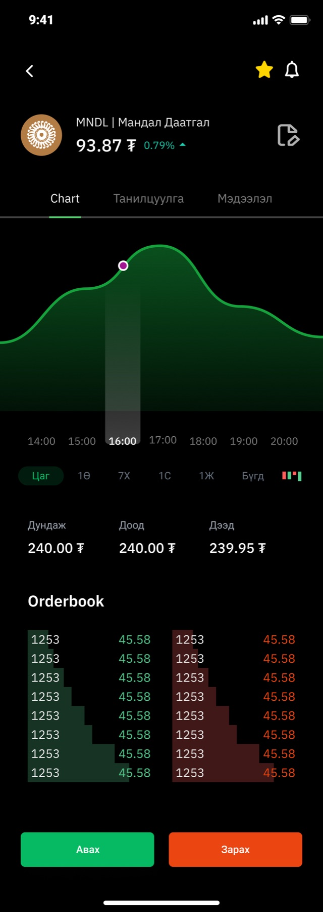
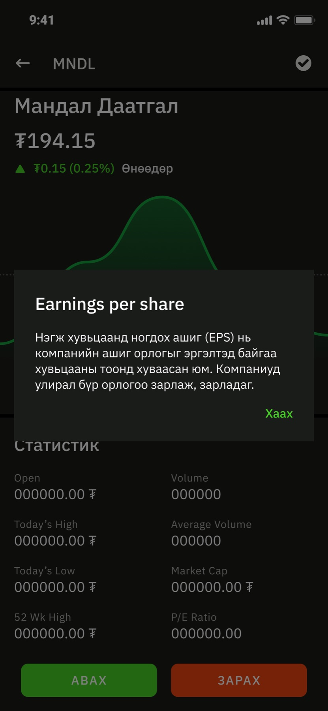
The detail screen is where I put the teaching. In the update every statistic on it, EPS, P/E, market cap, is a tap away from a plain-language sheet in Mongolian, and I wrote a pair of sheets headed advantage and disadvantage for each company so the analysis the deck promised actually appears next to the number it explains. The order book sits below the chart in the same green and red as everything else, because a first-time trader should meet it as a picture before they meet it as a concept.
Buy in three taps, cancel until I say so
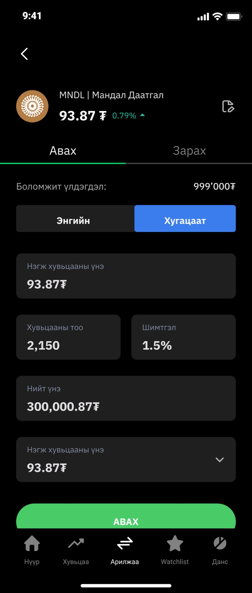
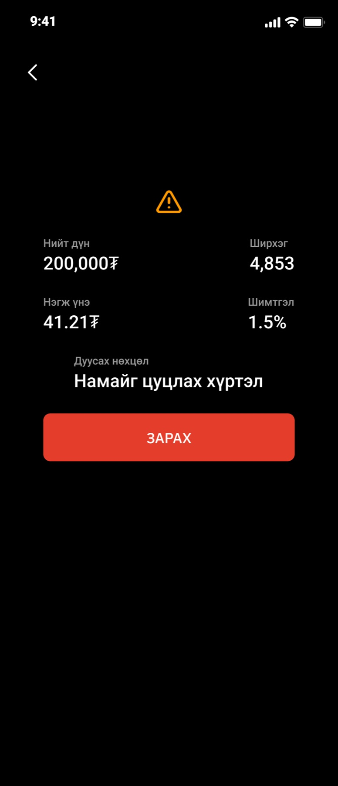
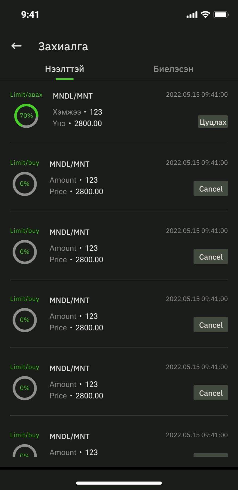
I kept the order form to what a person has to decide: buy or sell, market or limit, how many, and the total with the fee already inside it. The price field repeats at the bottom as a dropdown so a limit order can be adjusted without scrolling back up. Buy is green, sell is red, and the confirmation screen for a sell puts a warning triangle above the figures because selling is the tap people regret.
The line I am most pleased with is the expiry: Намайг цуцлах хүртэл, until I cancel. The finance term is good-till-cancelled. Nobody outside a brokerage says that, so the app does not either. The orders list then shows each open order as a ring that fills as the exchange fills it, so a partial fill is a picture and not a percentage you have to interpret.
Everything else a broker does
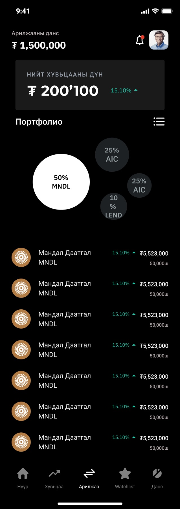
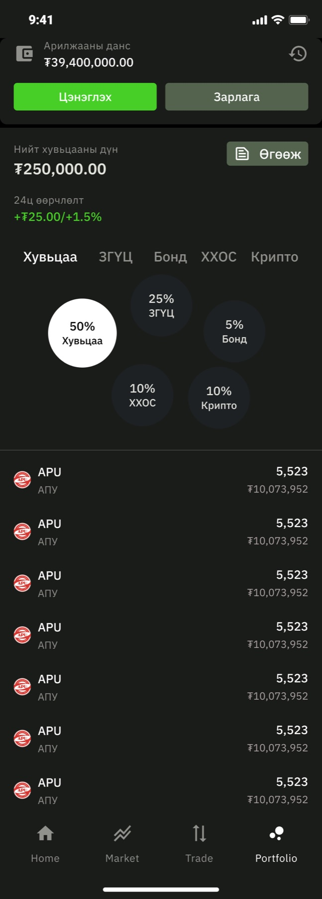
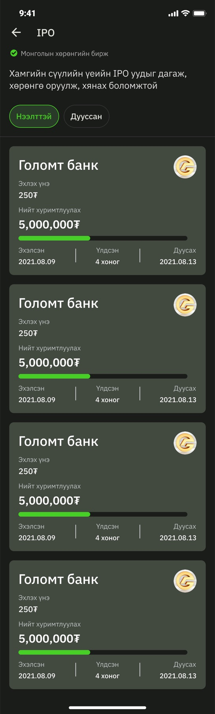
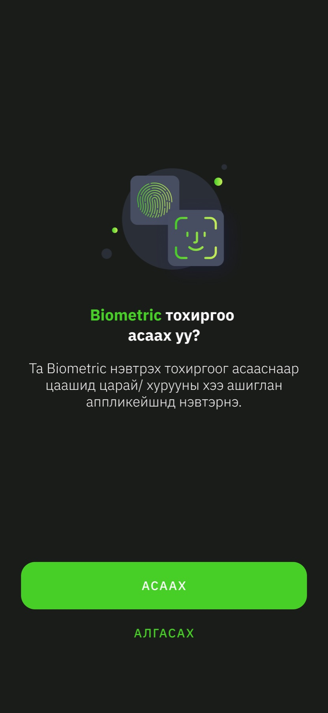
I let the portfolio grow the way the company did. In version one it was a bubble chart of stocks. In the update the bubbles are asset classes, stocks, government securities, bonds, funds and crypto, because by then the roadmap had more than shares on it. I kept the bubble chart rather than a donut because a bubble that is half the screen says “most of your money is here” faster than any legend.
Under those sit the screens nobody puts in a portfolio and everybody uses: a four-step KYC with the progress drawn as segments, deposit and withdrawal, notifications, a profile, and an IPO list where a live offering is a progress bar with a countdown. The biometric prompt came in the update, after the first version taught us how often people log in.
Black, three greys, one green
I put the whole app on true black, with one grey for surfaces and three for content. There is a single green and a single red, and I gave them nothing to do except mean up and down, buy and sell. Every other signal is a grey. That is the entire palette, and it is why 359 screens still look like one product.
Tokens as named in the file, Investo/Core
I set the type in Roboto in eight roles, each with a Mongolian and an English specimen on its card so the Cyrillic never surprises anyone at build time.
- Display and Heading
- Bold. The balance, the price, a screen title.
- Label and Paragraph
- Regular. Field labels, explainer sheets, news.
- Button and Caption
- The one place I allow all caps, and the smallest thing a finger should read.
- Overline and Number
- Section eyebrows, and a tabular figure set so columns of prices line up.
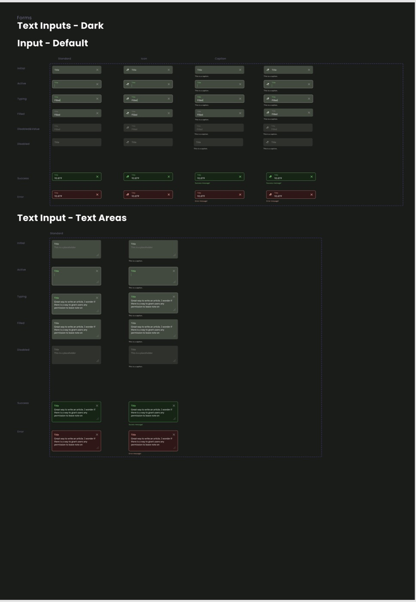
The deck and the landing page
At a start-up I end up designing the company as well as the app. I laid out the 21-slide deck the founders took to investors, and the table I built for it is the clearest statement of what Investo was for.
| Investo | Golomt Capital | TDB Capital | |
|---|---|---|---|
| Prices | Real time | 30 to 120 second delay | Real time |
| Mobile app | Yes | Yes | No |
| Commission | 1.5% | 2% | 2% |
| Foreign trading in the app | Yes | No | No |
The deck’s own comparison, redrawn. The brokers’ figures are the founders’ claims, not mine.4
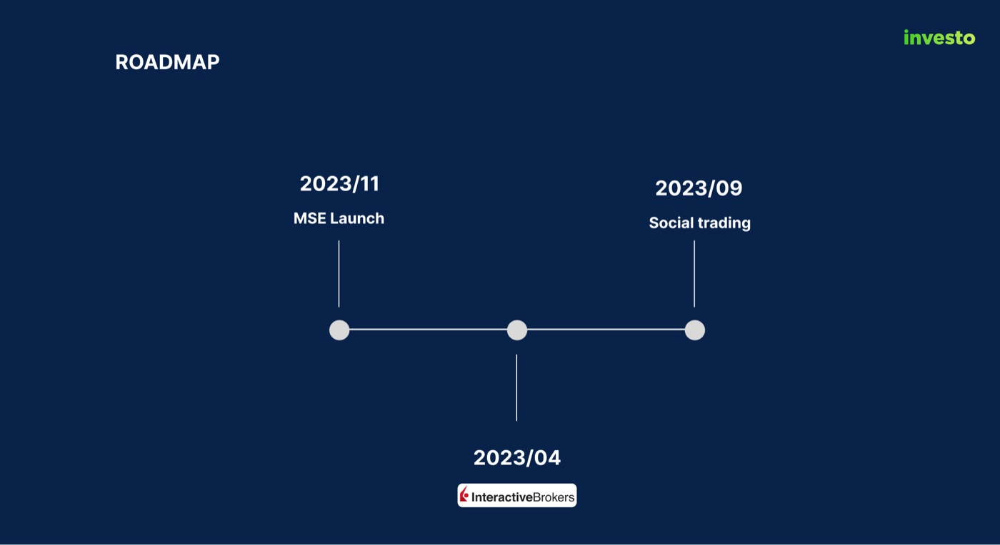
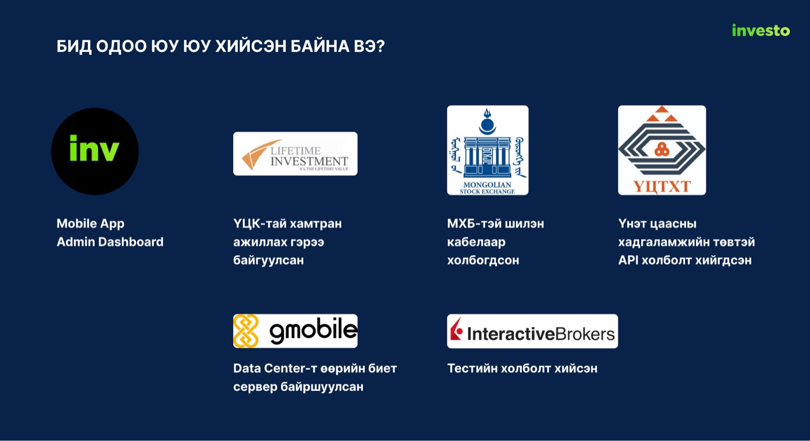
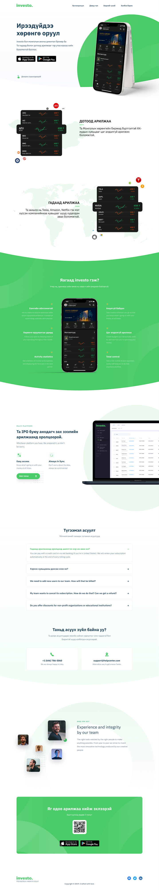
What a trading app taught me
A trading app is a list and a form, and everything else is trust. The list has to be scannable by colour before it is readable by number. The form has to contain every decision and nothing else. And the trust comes from the small things: a warning above a sell, an expiry written in the words a person would actually say, a sheet that explains EPS the moment you wonder about it.
I also learned to design the second version while shipping the first. The tab bar, the home screen and the portfolio all changed between the two, and every change came from watching what people did with the first one. The system underneath did not have to change at all, which is the part I would point a hiring manager to.
- Screen counts from the Figma file: 52 phone frames on the Master page, 114 on the Update page and 193 on the Process page. The Master page is stamped App ver 1.1.9 (67), Design ver 2.1.1.
- The 12 percent figure, the 70 million and 15 million tugrik averages and the age bands are from the investor deck in the file and are the company’s own research.
- Top 20 is the exchange’s index of its most traded companies. I ангилал and II ангилал are the Mongolian Stock Exchange’s first and second classification tiers.
- The deck also scored user experience out of ten and gave Investo eight. I left that row out here, because I designed it and it is not for me to grade.